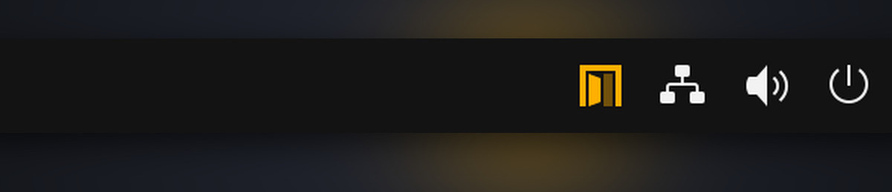

Leave sudo open on purpose.
Ajar switches passwordless sudo on and off from your desktop. Turning it on asks for your password. While it is on, an amber door sits in your top bar. Turning it off takes one click.

Before and after
The same command, a few seconds apart. In between, one click in Quick Settings and the system's own password dialog.

Install
For Ubuntu, Debian and Kali. Both ways install the same thing.
The package
Apt pulls in what is missing, and removing it turns passwordless sudo off for everyone.
curl -fsSLO https://github.com/techbysakh963/ajar/releases/download/v1.0.1/ajar_1.0.1_all.deb
sudo apt install ./ajar_1.0.1_all.debThe installer
Shows every change and asks before making it. Add --dry-run to only look.
curl -fsSL https://github.com/techbysakh963/ajar/releases/download/v1.0.1/install.sh | bashOn GNOME, log out and back in once, then find Sudo in Quick Settings. Everywhere else the door appears in your panel's tray. The installer only accepts the release it was built for: it checks the download's SHA-256 before installing anything.
Two states, nothing in between
Ajar never guesses. It asks sudo what it will really do, and shows you that.
Closed
- sudo asks for your password, as always.
- Opening it shows the system password dialog, every time.
- If another rule already gives you passwordless sudo, Ajar says so instead of showing closed.
Open
- sudo runs without asking, for you only.
- An amber door stays in the top bar or tray.
- Optional reminder after 15 minutes or an hour, with a Turn off button. It never cuts sudo off mid-task.
- Closing it needs no password from your own desktop. From SSH it does.
What open means
While Ajar is open, any program running as you can become root without asking. A script you pasted, a package's install hook, an AI agent: all of them.
That is what passwordless sudo is. Ajar makes it deliberate, visible and quick to end. The full threat model, including what Ajar does not protect, is in SECURITY.md.
Where it runs
Tested on real installs, not only in containers.
GNOME 45 to 50
A Sudo tile in Quick Settings. Ubuntu 24.04 and 26.04, Debian 13.
Xfce, KDE, MATE, Cinnamon
A tray icon. Kali Linux, and GNOME 43 on Debian 12.
Any terminal
ajar on, ajar off, ajar status, ajar doctor. Works with sudo and sudo-rs.